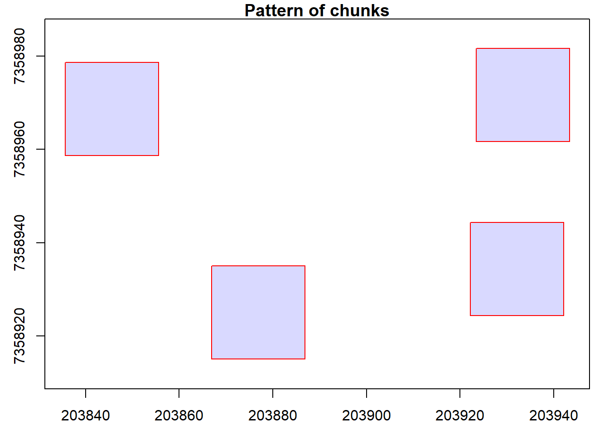
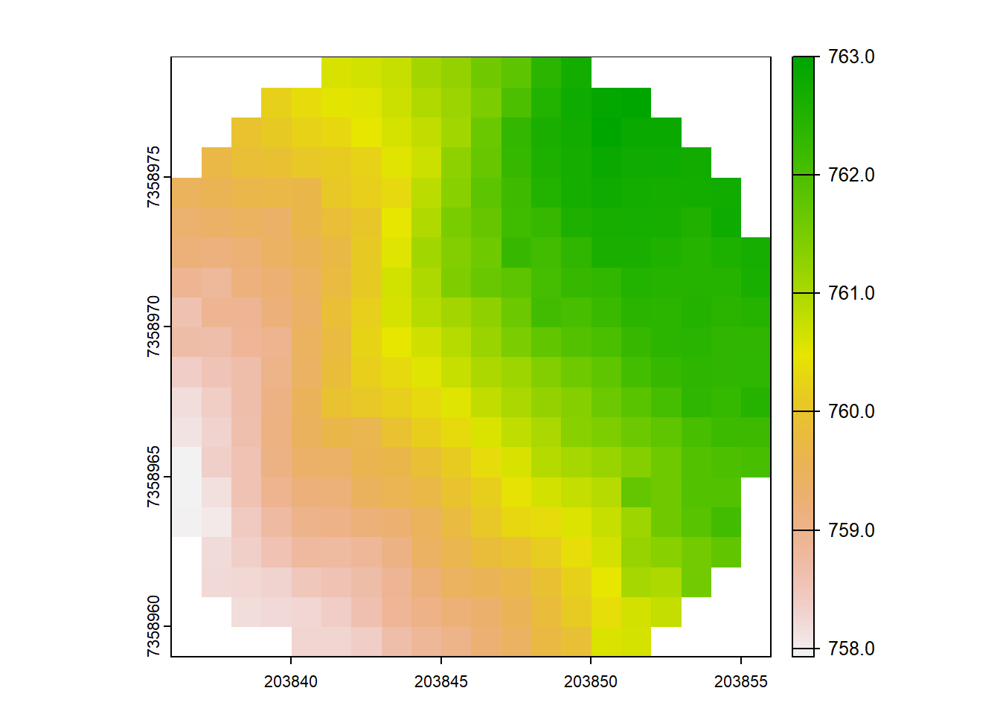
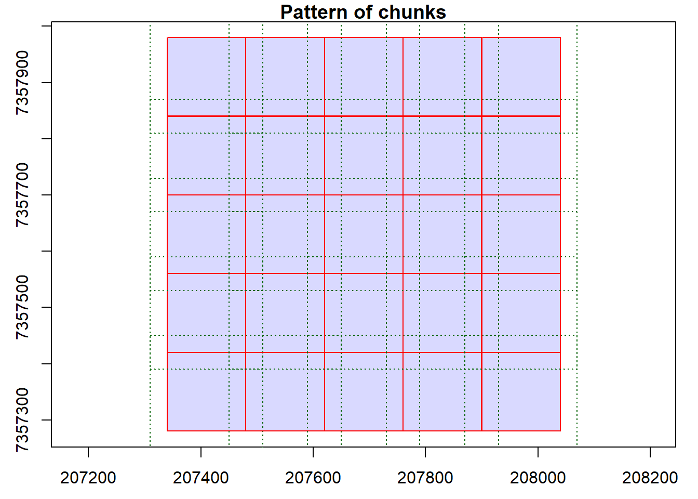

Warning: package 'rgl' was built under R version 4.2.3LAScatalog
Relevant resources:
Overview
This code performs various operations on LiDAR data using LAScatalog functionality. We visualize and inspect the data, validate the files, clip the data based on specific coordinates, and generate a Canopy Height Model (CHM), compute Above Ground Biomass (ABA) output, detect treetops, specify processing options, and use parallel computing.
Environment
# Clear environment
rm(list = ls(globalenv()))
# Load packages
library(lidR)
#> Warning: package 'lidR' was built under R version 4.2.3
library(sf)
#> Warning: package 'sf' was built under R version 4.2.3Basic Usage
In this section, we will cover the basic usage of the lidR package, including reading LiDAR data, visualization, and inspecting metadata.
Read catalog from directory of files
We begin by creating a LAS catalog (ctg) from a folder containing multiple LAS files using the readLAScatalog function.
# Read catalog and drop withheld
ctg <- readLAScatalog(folder = "data/Farm_A/",filter = "-drop_withheld")Inspect catalog
We can inspect the contents of the catalog using standard R functions.
ctg
#> class : LAScatalog (v1.2 format 0)
#> extent : 207340, 208040, 7357280, 7357980 (xmin, xmax, ymin, ymax)
#> coord. ref. : SIRGAS 2000 / UTM zone 23S
#> area : 489930 m²
#> points : 14.49 million points
#> density : 29.6 points/m²
#> density : 23.2 pulses/m²
#> num. files : 25Visualize catalog
We visualize the catalog, showing the spatial coverage of the LiDAR data header extents. The map can be interactive if we use map = TRUE. Try clicking on a tile to see its header information.
plot(ctg)
# Interactive
plot(ctg, map = TRUE)Check coordinate system and extent info
We examine the coordinate system and extent information of the catalog.
# coordinate system
crs(ctg)
#> Coordinate Reference System:
#> Deprecated Proj.4 representation:
#> +proj=utm +zone=23 +south +ellps=GRS80 +towgs84=0,0,0,0,0,0,0 +units=m
#> +no_defs
#> WKT2 2019 representation:
#> PROJCRS["SIRGAS 2000 / UTM zone 23S",
#> BASEGEOGCRS["SIRGAS 2000",
#> DATUM["Sistema de Referencia Geocentrico para las AmericaS 2000",
#> ELLIPSOID["GRS 1980",6378137,298.257222101,
#> LENGTHUNIT["metre",1]]],
#> PRIMEM["Greenwich",0,
#> ANGLEUNIT["degree",0.0174532925199433]],
#> ID["EPSG",4674]],
#> CONVERSION["UTM zone 23S",
#> METHOD["Transverse Mercator",
#> ID["EPSG",9807]],
#> PARAMETER["Latitude of natural origin",0,
#> ANGLEUNIT["degree",0.0174532925199433],
#> ID["EPSG",8801]],
#> PARAMETER["Longitude of natural origin",-45,
#> ANGLEUNIT["degree",0.0174532925199433],
#> ID["EPSG",8802]],
#> PARAMETER["Scale factor at natural origin",0.9996,
#> SCALEUNIT["unity",1],
#> ID["EPSG",8805]],
#> PARAMETER["False easting",500000,
#> LENGTHUNIT["metre",1],
#> ID["EPSG",8806]],
#> PARAMETER["False northing",10000000,
#> LENGTHUNIT["metre",1],
#> ID["EPSG",8807]]],
#> CS[Cartesian,2],
#> AXIS["(E)",east,
#> ORDER[1],
#> LENGTHUNIT["metre",1]],
#> AXIS["(N)",north,
#> ORDER[2],
#> LENGTHUNIT["metre",1]],
#> USAGE[
#> SCOPE["Engineering survey, topographic mapping."],
#> AREA["Brazil - between 48°W and 42°W, northern and southern hemispheres, onshore and offshore."],
#> BBOX[-33.5,-48,5.13,-42]],
#> ID["EPSG",31983]]
projection(ctg)
#> [1] "+proj=utm +zone=23 +south +ellps=GRS80 +towgs84=0,0,0,0,0,0,0 +units=m +no_defs"
st_crs(ctg)
#> Coordinate Reference System:
#> User input: EPSG:31983
#> wkt:
#> PROJCRS["SIRGAS 2000 / UTM zone 23S",
#> BASEGEOGCRS["SIRGAS 2000",
#> DATUM["Sistema de Referencia Geocentrico para las AmericaS 2000",
#> ELLIPSOID["GRS 1980",6378137,298.257222101,
#> LENGTHUNIT["metre",1]]],
#> PRIMEM["Greenwich",0,
#> ANGLEUNIT["degree",0.0174532925199433]],
#> ID["EPSG",4674]],
#> CONVERSION["UTM zone 23S",
#> METHOD["Transverse Mercator",
#> ID["EPSG",9807]],
#> PARAMETER["Latitude of natural origin",0,
#> ANGLEUNIT["degree",0.0174532925199433],
#> ID["EPSG",8801]],
#> PARAMETER["Longitude of natural origin",-45,
#> ANGLEUNIT["degree",0.0174532925199433],
#> ID["EPSG",8802]],
#> PARAMETER["Scale factor at natural origin",0.9996,
#> SCALEUNIT["unity",1],
#> ID["EPSG",8805]],
#> PARAMETER["False easting",500000,
#> LENGTHUNIT["metre",1],
#> ID["EPSG",8806]],
#> PARAMETER["False northing",10000000,
#> LENGTHUNIT["metre",1],
#> ID["EPSG",8807]]],
#> CS[Cartesian,2],
#> AXIS["(E)",east,
#> ORDER[1],
#> LENGTHUNIT["metre",1]],
#> AXIS["(N)",north,
#> ORDER[2],
#> LENGTHUNIT["metre",1]],
#> USAGE[
#> SCOPE["Engineering survey, topographic mapping."],
#> AREA["Brazil - between 48°W and 42°W, northern and southern hemispheres, onshore and offshore."],
#> BBOX[-33.5,-48,5.13,-42]],
#> ID["EPSG",31983]]
# spatial extents
extent(ctg)
#> class : Extent
#> xmin : 207340
#> xmax : 208040
#> ymin : 7357280
#> ymax : 7357980
bbox(ctg)
#> [,1] [,2]
#> [1,] 207340 208040
#> [2,] 7357280 7357980
st_bbox(ctg)
#> xmin ymin xmax ymax
#> 207340 7357280 208040 7357980Validate files in catalog
We validate the LAS files within the catalog using the las_check function. It works the same way as it would on a regular LAS file.
las_check(las = ctg)
#>
#> Checking headers consistency
#> - Checking file version consistency...[0;32m ✓[0m
#> - Checking scale consistency...[0;32m ✓[0m
#> - Checking offset consistency...[0;32m ✓[0m
#> - Checking point type consistency...[0;32m ✓[0m
#> - Checking VLR consistency...[0;32m ✓[0m
#> - Checking CRS consistency...[0;32m ✓[0m
#> Checking the headers
#> - Checking scale factor validity...[0;32m ✓[0m
#> - Checking Point Data Format ID validity...[0;32m ✓[0m
#> Checking preprocessing already done
#> - Checking negative outliers...
#> [1;33m ⚠ 25 file(s) with points below 0[0m
#> - Checking normalization...[0;31m no[0m
#> Checking the geometry
#> - Checking overlapping tiles...[0;32m ✓[0m
#> - Checking point indexation...[0;32m yes[0mFile indexing
We explore indexing of LAScatalog objects for efficient processing. The lidR policy has always been: use LAStools and lasindex for spatial indexing. If you really don’t want, or can’t use LAStools, then there is a hidden function in lidR that users can use (lidR:::catalog_laxindex()).
# check if files have .lax
is.indexed(ctg)
#> [1] FALSE
# generate index files
lidR:::catalog_laxindex(ctg)
#> Chunk 1 of 25 (4%): state ✓
#> Chunk 2 of 25 (8%): state ✓
#> Chunk 3 of 25 (12%): state ✓
#> Chunk 4 of 25 (16%): state ✓
#> Chunk 5 of 25 (20%): state ✓
#> Chunk 6 of 25 (24%): state ✓
#> Chunk 7 of 25 (28%): state ✓
#> Chunk 8 of 25 (32%): state ✓
#> Chunk 9 of 25 (36%): state ✓
#> Chunk 10 of 25 (40%): state ✓
#> Chunk 11 of 25 (44%): state ✓
#> Chunk 12 of 25 (48%): state ✓
#> Chunk 13 of 25 (52%): state ✓
#> Chunk 14 of 25 (56%): state ✓
#> Chunk 15 of 25 (60%): state ✓
#> Chunk 16 of 25 (64%): state ✓
#> Chunk 17 of 25 (68%): state ✓
#> Chunk 18 of 25 (72%): state ✓
#> Chunk 19 of 25 (76%): state ✓
#> Chunk 20 of 25 (80%): state ✓
#> Chunk 21 of 25 (84%): state ✓
#> Chunk 22 of 25 (88%): state ✓
#> Chunk 23 of 25 (92%): state ✓
#> Chunk 24 of 25 (96%): state ✓
#> Chunk 25 of 25 (100%): state ✓
# check if files have .lax
is.indexed(ctg)
#> [1] TRUEGenerate CHM
We create a CHM by rasterizing the point cloud data from the catalog.
# Generate CHM
chm <- rasterize_canopy(las = ctg, res = 0.5, algorithm = p2r(subcircle = 0.15))
#> Chunk 1 of 25 (4%): state ✓
#> Chunk 2 of 25 (8%): state ✓
#> Chunk 3 of 25 (12%): state ✓
#> Chunk 4 of 25 (16%): state ✓
#> Chunk 5 of 25 (20%): state ✓
#> Chunk 6 of 25 (24%): state ✓
#> Chunk 7 of 25 (28%): state ✓
#> Chunk 8 of 25 (32%): state ✓
#> Chunk 9 of 25 (36%): state ✓
#> Chunk 10 of 25 (40%): state ✓
#> Chunk 11 of 25 (44%): state ✓
#> Chunk 12 of 25 (48%): state ✓
#> Chunk 13 of 25 (52%): state ✓
#> Chunk 14 of 25 (56%): state ✓
#> Chunk 15 of 25 (60%): state ✓
#> Chunk 16 of 25 (64%): state ✓
#> Chunk 17 of 25 (68%): state ✓
#> Chunk 18 of 25 (72%): state ✓
#> Chunk 19 of 25 (76%): state ✓
#> Chunk 20 of 25 (80%): state ✓
#> Chunk 21 of 25 (84%): state ✓
#> Chunk 22 of 25 (88%): state ✓
#> Chunk 23 of 25 (92%): state ✓
#> Chunk 24 of 25 (96%): state ✓
#> Chunk 25 of 25 (100%): state ✓
plot(chm, col = height.colors(50))We encounter issues and warnings while generating the CHM. Let’s figure out how to fix the warnings and get decent outputs.
# Check for warnings
warnings()Catalog processing options
We explore and manipulate catalog options.
# Setting options and re-rasterizing the CHM
opt_filter(ctg) <- "-drop_z_below 0 -drop_z_above 40"
opt_select(ctg) <- "xyz"
chm <- rasterize_canopy(las = ctg, res = 0.5, algorithm = p2r(subcircle = 0.15))
#> Warning: There are 176895 points flagged 'withheld'.
#> Chunk 1 of 25 (4%): state ⚠
#> Warning: There are 181480 points flagged 'withheld'.
#> Chunk 2 of 25 (8%): state ⚠
#> Warning: There are 180240 points flagged 'withheld'.
#> Chunk 3 of 25 (12%): state ⚠
#> Warning: There are 183999 points flagged 'withheld'.
#> Chunk 4 of 25 (16%): state ⚠
#> Warning: There are 180695 points flagged 'withheld'.
#> Chunk 5 of 25 (20%): state ⚠
#> Warning: There are 160127 points flagged 'withheld'.
#> Chunk 6 of 25 (24%): state ⚠
#> Warning: There are 193741 points flagged 'withheld'.
#> Chunk 7 of 25 (28%): state ⚠
#> Warning: There are 199696 points flagged 'withheld'.
#> Chunk 8 of 25 (32%): state ⚠
#> Warning: There are 185983 points flagged 'withheld'.
#> Chunk 9 of 25 (36%): state ⚠
#> Warning: There are 179860 points flagged 'withheld'.
#> Chunk 10 of 25 (40%): state ⚠
#> Warning: There are 130098 points flagged 'withheld'.
#> Chunk 11 of 25 (44%): state ⚠
#> Warning: There are 148560 points flagged 'withheld'.
#> Chunk 12 of 25 (48%): state ⚠
#> Warning: There are 154984 points flagged 'withheld'.
#> Chunk 13 of 25 (52%): state ⚠
#> Warning: There are 151367 points flagged 'withheld'.
#> Chunk 14 of 25 (56%): state ⚠
#> Warning: There are 148949 points flagged 'withheld'.
#> Chunk 15 of 25 (60%): state ⚠
#> Warning: There are 109875 points flagged 'withheld'.
#> Chunk 16 of 25 (64%): state ⚠
#> Warning: There are 139859 points flagged 'withheld'.
#> Chunk 17 of 25 (68%): state ⚠
#> Warning: There are 143824 points flagged 'withheld'.
#> Chunk 18 of 25 (72%): state ⚠
#> Warning: There are 141074 points flagged 'withheld'.
#> Chunk 19 of 25 (76%): state ⚠
#> Warning: There are 117537 points flagged 'withheld'.
#> Chunk 20 of 25 (80%): state ⚠
#> Warning: There are 112307 points flagged 'withheld'.
#> Chunk 21 of 25 (84%): state ⚠
#> Warning: There are 138902 points flagged 'withheld'.
#> Chunk 22 of 25 (88%): state ⚠
#> Warning: There are 127818 points flagged 'withheld'.
#> Chunk 23 of 25 (92%): state ⚠
#> Warning: There are 109880 points flagged 'withheld'.
#> Chunk 24 of 25 (96%): state ⚠
#> Warning: There are 105073 points flagged 'withheld'.
#> Chunk 25 of 25 (100%): state ⚠
plot(chm, col = height.colors(50))Area-based approach on catalog
In this section, we generate Above Ground Biomass (ABA) estimates using the LAScatalog.
Generate ABA output and visualize
We calculate ABA using the pixel_metrics function and visualize the results.
# Generate area-based metrics
model <- pixel_metrics(las = ctg, func = ~max(Z), res = 20)
#> Warning: There are 176895 points flagged 'withheld'.
#> Chunk 1 of 25 (4%): state ⚠
#> Warning: There are 181480 points flagged 'withheld'.
#> Chunk 2 of 25 (8%): state ⚠
#> Warning: There are 180240 points flagged 'withheld'.
#> Chunk 3 of 25 (12%): state ⚠
#> Warning: There are 183999 points flagged 'withheld'.
#> Chunk 4 of 25 (16%): state ⚠
#> Warning: There are 180695 points flagged 'withheld'.
#> Chunk 5 of 25 (20%): state ⚠
#> Warning: There are 160127 points flagged 'withheld'.
#> Chunk 6 of 25 (24%): state ⚠
#> Warning: There are 193741 points flagged 'withheld'.
#> Chunk 7 of 25 (28%): state ⚠
#> Warning: There are 199696 points flagged 'withheld'.
#> Chunk 8 of 25 (32%): state ⚠
#> Warning: There are 185983 points flagged 'withheld'.
#> Chunk 9 of 25 (36%): state ⚠
#> Warning: There are 179860 points flagged 'withheld'.
#> Chunk 10 of 25 (40%): state ⚠
#> Warning: There are 130098 points flagged 'withheld'.
#> Chunk 11 of 25 (44%): state ⚠
#> Warning: There are 148560 points flagged 'withheld'.
#> Chunk 12 of 25 (48%): state ⚠
#> Warning: There are 154984 points flagged 'withheld'.
#> Chunk 13 of 25 (52%): state ⚠
#> Warning: There are 151367 points flagged 'withheld'.
#> Chunk 14 of 25 (56%): state ⚠
#> Warning: There are 148949 points flagged 'withheld'.
#> Chunk 15 of 25 (60%): state ⚠
#> Warning: There are 109875 points flagged 'withheld'.
#> Chunk 16 of 25 (64%): state ⚠
#> Warning: There are 139859 points flagged 'withheld'.
#> Chunk 17 of 25 (68%): state ⚠
#> Warning: There are 143824 points flagged 'withheld'.
#> Chunk 18 of 25 (72%): state ⚠
#> Warning: There are 141074 points flagged 'withheld'.
#> Chunk 19 of 25 (76%): state ⚠
#> Warning: There are 117537 points flagged 'withheld'.
#> Chunk 20 of 25 (80%): state ⚠
#> Warning: There are 112307 points flagged 'withheld'.
#> Chunk 21 of 25 (84%): state ⚠
#> Warning: There are 138902 points flagged 'withheld'.
#> Chunk 22 of 25 (88%): state ⚠
#> Warning: There are 127818 points flagged 'withheld'.
#> Chunk 23 of 25 (92%): state ⚠
#> Warning: There are 109880 points flagged 'withheld'.
#> Chunk 24 of 25 (96%): state ⚠
#> Warning: There are 105073 points flagged 'withheld'.#> Chunk 25 of 25 (100%): state ⚠
plot(model, col = height.colors(50))
First returns only
We adjust the catalog options to calculate ABA based on first returns only.
opt_filter(ctg) <- "-drop_z_below 0 -drop_z_above 40 -keep_first"
model <- pixel_metrics(las = ctg, func = ~max(Z), res = 20)
#> Warning: There are 136085 points flagged 'withheld'.
#> Chunk 1 of 25 (4%): state ⚠
#> Warning: There are 133757 points flagged 'withheld'.
#> Chunk 2 of 25 (8%): state ⚠
#> Warning: There are 139218 points flagged 'withheld'.
#> Chunk 3 of 25 (12%): state ⚠
#> Warning: There are 139749 points flagged 'withheld'.
#> Chunk 4 of 25 (16%): state ⚠
#> Warning: There are 137216 points flagged 'withheld'.
#> Chunk 5 of 25 (20%): state ⚠
#> Warning: There are 118302 points flagged 'withheld'.
#> Chunk 6 of 25 (24%): state ⚠
#> Warning: There are 144423 points flagged 'withheld'.
#> Chunk 7 of 25 (28%): state ⚠
#> Warning: There are 150632 points flagged 'withheld'.
#> Chunk 8 of 25 (32%): state ⚠
#> Warning: There are 146331 points flagged 'withheld'.
#> Chunk 9 of 25 (36%): state ⚠
#> Warning: There are 138662 points flagged 'withheld'.
#> Chunk 10 of 25 (40%): state ⚠
#> Warning: There are 102298 points flagged 'withheld'.
#> Chunk 11 of 25 (44%): state ⚠
#> Warning: There are 111254 points flagged 'withheld'.
#> Chunk 12 of 25 (48%): state ⚠
#> Warning: There are 114956 points flagged 'withheld'.
#> Chunk 13 of 25 (52%): state ⚠
#> Warning: There are 115248 points flagged 'withheld'.
#> Chunk 14 of 25 (56%): state ⚠
#> Warning: There are 112068 points flagged 'withheld'.
#> Chunk 15 of 25 (60%): state ⚠
#> Warning: There are 92112 points flagged 'withheld'.
#> Chunk 16 of 25 (64%): state ⚠
#> Warning: There are 105339 points flagged 'withheld'.
#> Chunk 17 of 25 (68%): state ⚠
#> Warning: There are 108368 points flagged 'withheld'.
#> Chunk 18 of 25 (72%): state ⚠
#> Warning: There are 109413 points flagged 'withheld'.
#> Chunk 19 of 25 (76%): state ⚠
#> Warning: There are 103329 points flagged 'withheld'.
#> Chunk 20 of 25 (80%): state ⚠
#> Warning: There are 90720 points flagged 'withheld'.
#> Chunk 21 of 25 (84%): state ⚠
#> Warning: There are 107556 points flagged 'withheld'.
#> Chunk 22 of 25 (88%): state ⚠
#> Warning: There are 109418 points flagged 'withheld'.
#> Chunk 23 of 25 (92%): state ⚠
#> Warning: There are 105598 points flagged 'withheld'.
#> Chunk 24 of 25 (96%): state ⚠
#> Warning: There are 104440 points flagged 'withheld'.
#> Chunk 25 of 25 (100%): state ⚠
plot(model, col = height.colors(50))Clip a catalog
We clip the LAS data in the catalog using specified coordinate groups.
# Set coordinate groups
x <- c(207846, 208131, 208010, 207852, 207400)
y <- c(7357315, 7357537, 7357372, 7357548, 7357900)
# Visualize coordinate groups
plot(ctg)
points(x, y)
# Clip plots
rois <- clip_circle(las = ctg, xcenter = x, ycenter = y, radius = 30)
#> Chunk 1 of 5 (20%): state ✓
#> Chunk 2 of 5 (40%): state ∅
#> Chunk 3 of 5 (60%): state ✓
#> Chunk 4 of 5 (80%): state ✓
#> Chunk 5 of 5 (100%): state ✓
#> No point found for within region of interest 2.
plot(rois[[1]])plot(rois[[3]])Validate clipped data
We validate the clipped LAS data using the las_check function.
las_check(rois[[1]])
#>
#> Checking the data
#> - Checking coordinates...[0;32m ✓[0m
#> - Checking coordinates type...[0;32m ✓[0m
#> - Checking coordinates range...[0;32m ✓[0m
#> - Checking coordinates quantization...[0;32m ✓[0m
#> - Checking attributes type...[0;32m ✓[0m
#> - Checking ReturnNumber validity...[0;32m ✓[0m
#> - Checking NumberOfReturns validity...[0;32m ✓[0m
#> - Checking ReturnNumber vs. NumberOfReturns...[0;32m ✓[0m
#> - Checking RGB validity...[0;32m ✓[0m
#> - Checking absence of NAs...[0;32m ✓[0m
#> - Checking duplicated points...
#> [1;33m ⚠ 10212 points are duplicated and share XYZ coordinates with other points[0m
#> - Checking degenerated ground points...[0;37m skipped[0m
#> - Checking attribute population...[0;32m ✓[0m
#> - Checking gpstime incoherances[0;37m skipped[0m
#> - Checking flag attributes...[0;32m ✓[0m
#> - Checking user data attribute...[0;37m skipped[0m
#> Checking the header
#> - Checking header completeness...[0;32m ✓[0m
#> - Checking scale factor validity...[0;32m ✓[0m
#> - Checking point data format ID validity...[0;32m ✓[0m
#> - Checking extra bytes attributes validity...[0;32m ✓[0m
#> - Checking the bounding box validity...[0;32m ✓[0m
#> - Checking coordinate reference system...[0;32m ✓[0m
#> Checking header vs data adequacy
#> - Checking attributes vs. point format...[0;32m ✓[0m
#> - Checking header bbox vs. actual content...[0;32m ✓[0m
#> - Checking header number of points vs. actual content...[0;32m ✓[0m
#> - Checking header return number vs. actual content...[0;32m ✓[0m
#> Checking coordinate reference system...
#> - Checking if the CRS was understood by R...[0;32m ✓[0m
#> Checking preprocessing already done
#> - Checking ground classification...[0;37m skipped[0m
#> - Checking normalization...[0;32m yes[0m
#> - Checking negative outliers...[0;32m ✓[0m
#> - Checking flightline classification...[0;37m skipped[0m
#> Checking compression
#> - Checking attribute compression...[0;31m no[0m
las_check(rois[[3]])
#>
#> Checking the data
#> - Checking coordinates...[0;32m ✓[0m
#> - Checking coordinates type...[0;32m ✓[0m
#> - Checking coordinates range...[0;32m ✓[0m
#> - Checking coordinates quantization...[0;32m ✓[0m
#> - Checking attributes type...[0;32m ✓[0m
#> - Checking ReturnNumber validity...[0;32m ✓[0m
#> - Checking NumberOfReturns validity...[0;32m ✓[0m
#> - Checking ReturnNumber vs. NumberOfReturns...[0;32m ✓[0m
#> - Checking RGB validity...[0;32m ✓[0m
#> - Checking absence of NAs...[0;32m ✓[0m
#> - Checking duplicated points...
#> [1;33m ⚠ 30645 points are duplicated and share XYZ coordinates with other points[0m
#> - Checking degenerated ground points...[0;37m skipped[0m
#> - Checking attribute population...[0;32m ✓[0m
#> - Checking gpstime incoherances[0;37m skipped[0m
#> - Checking flag attributes...[0;32m ✓[0m
#> - Checking user data attribute...[0;37m skipped[0m
#> Checking the header
#> - Checking header completeness...[0;32m ✓[0m
#> - Checking scale factor validity...[0;32m ✓[0m
#> - Checking point data format ID validity...[0;32m ✓[0m
#> - Checking extra bytes attributes validity...[0;32m ✓[0m
#> - Checking the bounding box validity...[0;32m ✓[0m
#> - Checking coordinate reference system...[0;32m ✓[0m
#> Checking header vs data adequacy
#> - Checking attributes vs. point format...[0;32m ✓[0m
#> - Checking header bbox vs. actual content...[0;32m ✓[0m
#> - Checking header number of points vs. actual content...[0;32m ✓[0m
#> - Checking header return number vs. actual content...[0;32m ✓[0m
#> Checking coordinate reference system...
#> - Checking if the CRS was understood by R...[0;32m ✓[0m
#> Checking preprocessing already done
#> - Checking ground classification...[0;37m skipped[0m
#> - Checking normalization...[0;31m no[0m
#> - Checking negative outliers...[0;32m ✓[0m
#> - Checking flightline classification...[0;37m skipped[0m
#> Checking compression
#> - Checking attribute compression...[0;31m no[0mIndependent files (e.g. plots) as catalogs
We read an individual LAS file as a catalog and perform operations on it.
# Read single file as catalog
ctg_non_norm <- readLAScatalog(folder = "data/MixedEucaNat.laz")
# Set options for output files
opt_output_files(ctg_non_norm) <- paste0(tempdir(),"/{XCENTER}_{XCENTER}")
# Write file as .laz
opt_laz_compression(ctg_non_norm) <- TRUE
# Get random plot locations and clip
x <- runif(n = 4, min = ctg_non_norm$Min.X, max = ctg_non_norm$Max.X)
y <- runif(n = 4, min = ctg_non_norm$Min.Y, max = ctg_non_norm$Max.Y)
rois <- clip_circle(las = ctg_non_norm, xcenter = x, ycenter = y, radius = 10)#> Chunk 1 of 4 (25%): state ✓
#> Chunk 2 of 4 (50%): state ✓
#> Chunk 3 of 4 (75%): state ✓
#> Chunk 4 of 4 (100%): state ✓# Read catalog of plots
ctg_plots <- readLAScatalog(tempdir())
# Set independent files option
opt_independent_files(ctg_plots) <- TRUE
opt_output_files(ctg_plots) <- paste0(tempdir(),"/{XCENTER}_{XCENTER}")
# Generate plot-level terrain models
rasterize_terrain(las = ctg_plots, res = 1, algorithm = tin())
#> Warning: There are 951 points flagged 'withheld'.
#> Chunk 1 of 4 (25%): state ⚠
#> Chunk 2 of 4 (50%): state ✓
#> Chunk 3 of 4 (75%): state ✓
#> Chunk 4 of 4 (100%): state ✓
#> Warning: An error occured during the automatic merge of 'catalog_apply'. Merging
#> is impossible. A list has been returned.
#> [[1]]
#> [1] "C:\\Users\\tgood.stu\\AppData\\Local\\Temp\\RtmpEt8kmV/203845.6_203845.6.tif"
#> attr(,"rasterpkg")
#> [1] "terra"
#> attr(,"layernames")
#> [1] "Z"
#>
#> [[2]]
#> [1] "C:\\Users\\tgood.stu\\AppData\\Local\\Temp\\RtmpEt8kmV/203876.9_203876.9.tif"
#> attr(,"rasterpkg")
#> [1] "terra"
#> attr(,"layernames")
#> [1] "Z"
#>
#> [[3]]
#> [1] "C:\\Users\\tgood.stu\\AppData\\Local\\Temp\\RtmpEt8kmV/203932.2_203932.2.tif"
#> attr(,"rasterpkg")
#> [1] "terra"
#> attr(,"layernames")
#> [1] "Z"
#>
#> [[4]]
#> [1] "C:\\Users\\tgood.stu\\AppData\\Local\\Temp\\RtmpEt8kmV/203933.5_203933.5.tif"
#> attr(,"rasterpkg")
#> [1] "terra"
#> attr(,"layernames")
#> [1] "Z"# Check files
path <- paste0(tempdir())
file_list <- list.files(path, full.names = TRUE)
file <- file_list[grep("\\.tif$", file_list)][[1]]
# plot dtm
plot(terra::rast(file))
ITD using LAScatalog
In this section, we explore Individual Tree Detection (ITD) using the LAScatalog. We first configure catalog options for ITD.
# Set catalog options
opt_filter(ctg) <- "-drop_withheld -drop_z_below 0 -drop_z_above 40"Detect treetops and visualize
We detect treetops and visualize the results.
# Detect tree tops and plot
ttops <- locate_trees(las = ctg, algorithm = lmf(ws = 3, hmin = 5))
#> Chunk 1 of 25 (4%): state ✓
#> Chunk 2 of 25 (8%): state ✓
#> Chunk 3 of 25 (12%): state ✓
#> Chunk 4 of 25 (16%): state ✓
#> Chunk 5 of 25 (20%): state ✓
#> Chunk 6 of 25 (24%): state ✓
#> Chunk 7 of 25 (28%): state ✓
#> Chunk 8 of 25 (32%): state ✓
#> Chunk 9 of 25 (36%): state ✓
#> Chunk 10 of 25 (40%): state ✓
#> Chunk 11 of 25 (44%): state ✓
#> Chunk 12 of 25 (48%): state ✓
#> Chunk 13 of 25 (52%): state ✓
#> Chunk 14 of 25 (56%): state ✓
#> Chunk 15 of 25 (60%): state ✓
#> Chunk 16 of 25 (64%): state ✓
#> Chunk 17 of 25 (68%): state ✓
#> Chunk 18 of 25 (72%): state ✓
#> Chunk 19 of 25 (76%): state ✓
#> Chunk 20 of 25 (80%): state ✓
#> Chunk 21 of 25 (84%): state ✓
#> Chunk 22 of 25 (88%): state ✓
#> Chunk 23 of 25 (92%): state ✓
#> Chunk 24 of 25 (96%): state ✓
#> Chunk 25 of 25 (100%): state ✓
plot(chm, col = height.colors(50))
plot(ttops, add = TRUE, cex = 0.1, col = "black")
#> Warning in plot.sf(ttops, add = TRUE, cex = 0.1, col = "black"): ignoring all
#> but the first attributeSpecify catalog options
We specify additional catalog options for ITD.
# Specify more options
opt_select(ctg) <- "xyz"
opt_chunk_size(ctg) <- 300
opt_chunk_buffer(ctg) <- 10
# Detect treetops and plot
ttops <- locate_trees(las = ctg, algorithm = lmf(ws = 3, hmin = 5))#> Chunk 1 of 9 (11.1%): state ✓
#> Chunk 2 of 9 (22.2%): state ✓
#> Chunk 3 of 9 (33.3%): state ✓
#> Chunk 4 of 9 (44.4%): state ✓
#> Chunk 5 of 9 (55.6%): state ✓
#> Chunk 6 of 9 (66.7%): state ✓
#> Chunk 7 of 9 (77.8%): state ✓
#> Chunk 8 of 9 (88.9%): state ✓
#> Chunk 9 of 9 (100%): state ✓
plot(chm, col = height.colors(50))
plot(ttops, add = TRUE, cex = 0.1, col = "black")
#> Warning in plot.sf(ttops, add = TRUE, cex = 0.1, col = "black"): ignoring all
#> but the first attributeParallel computing
In this section, we explore parallel computing using the lidR package.
Load future library
We load the future library to enable parallel processing.
library(future)
#> Warning: package 'future' was built under R version 4.2.3Specify catalog options
We specify catalog options for parallel processing.
# Specify options
opt_select(ctg) <- "xyz"
opt_chunk_size(ctg) <- 300
opt_chunk_buffer(ctg) <- 10
# Visualize and summarize the catalog chunks
plot(ctg, chunk = TRUE)
summary(ctg)
#> class : LAScatalog (v1.2 format 0)
#> extent : 207340, 208040, 7357280, 7357980 (xmin, xmax, ymin, ymax)
#> coord. ref. : SIRGAS 2000 / UTM zone 23S
#> area : 489930 m²
#> points : 14.49 million points
#> density : 29.6 points/m²
#> density : 23.2 pulses/m²
#> num. files : 25
#> proc. opt. : buffer: 10 | chunk: 300
#> input opt. : select: xyz | filter: -drop_withheld -drop_z_below 0 -drop_z_above 40
#> output opt. : in memory | w2w guaranteed | merging enabled
#> drivers :
#> - Raster : format = GTiff NAflag = -999999
#> - stars : NA_value = -999999
#> - SpatRaster : overwrite = FALSE NAflag = -999999
#> - SpatVector : overwrite = FALSE
#> - LAS : no parameter
#> - Spatial : overwrite = FALSE
#> - sf : quiet = TRUE
#> - data.frame : no parameterSingle core processing
We perform tree detection using a single core.
# Process on single core
future::plan(sequential)
# Detect trees
ttops <- locate_trees(las = ctg, algorithm = lmf(ws = 3, hmin = 5))
#> Chunk 1 of 9 (11.1%): state ✓
#> Chunk 2 of 9 (22.2%): state ✓
#> Chunk 3 of 9 (33.3%): state ✓
#> Chunk 4 of 9 (44.4%): state ✓
#> Chunk 5 of 9 (55.6%): state ✓
#> Chunk 6 of 9 (66.7%): state ✓
#> Chunk 7 of 9 (77.8%): state ✓
#> Chunk 8 of 9 (88.9%): state ✓
#> Chunk 9 of 9 (100%): state ✓Parallel processing
We perform tree detection using multiple cores in parallel.
# Process multi-core
future::plan(multisession)
# Detect trees
ttops <- locate_trees(las = ctg, algorithm = lmf(ws = 3, hmin = 5))
#> Chunk 1 of 9 (11.1%): state ✓
#> Chunk 2 of 9 (22.2%): state ✓
#> Chunk 3 of 9 (33.3%): state ✓
#> Chunk 4 of 9 (44.4%): state ✓
#> Chunk 6 of 9 (55.6%): state ✓
#> Chunk 5 of 9 (66.7%): state ✓
#> Chunk 9 of 9 (77.8%): state ✓
#> Chunk 7 of 9 (88.9%): state ✓
#> Chunk 8 of 9 (100%): state ✓Parallel processing over a network
We demonstrate how to parallelize processing over a network using future::plan(remote). This is just an example of how one could do this.
# Example of network processing
future::plan(remote, workers = c("localhost", "bob@132.203.41.87", "alice@132.203.41.87"))
ttops <- locate_trees(ctg, lmf(3, hmin = 5))Revert to single core
We revert to single core processing using future::plan(sequential).
# Back to single core
future::plan(sequential)This concludes the tutorial on basic usage, catalog validation, indexing, CHM generation, ABA estimation, data clipping, ITD using catalog, and parallel computing using the lidR package in R.
Exercises and Questions
Tip
This exercise is complex because it involves options not yet described. Be sure to use the lidRbook and package documentation.
Using:
ctg <- readLAScatalog(folder = "data/Farm_A/")
E1.
Generate a raster of point density for the provided catalog. Hint: Look through the documentation for a function that will do this!
E2.
Modify the catalog to have a point density of 10 pts/m2 using the decimate_points() function. If you get an error make sure to read the documentation for decimate_points() and try: using opt_output_file() to write files to a temporary directory.
E3.
Generate a raster of point density for this new decimated dataset.
E4.
Read the whole decimated catalog as a single las file. The catalog isn’t very big - not recommended for larger datasets!
E5.
Read documentation for the catalog_retile() function and merge the decimated catalog into larger tiles.